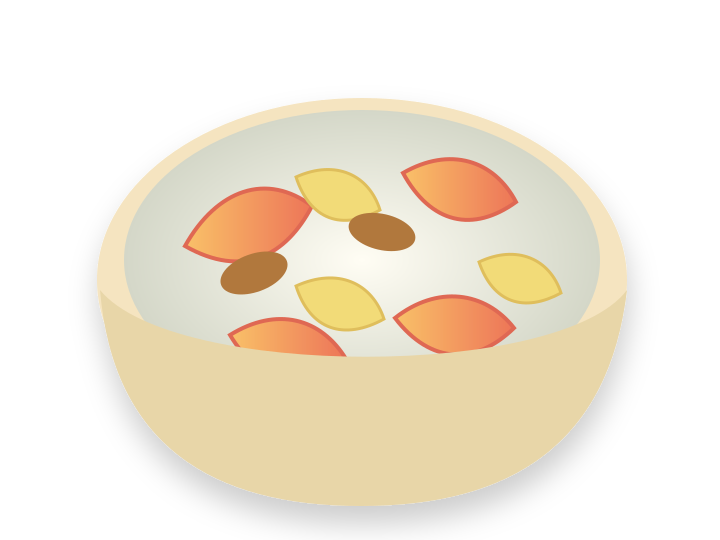

Peak now
California grapes
Sweet, fragrant and everywhere. Look for Concords’ short, perfumed season.
Explore grapes· Bay Area
A field guide to the food having its moment—what’s peaking, what just arrived, and what to eat before it’s gone.
The September basket
Sweet, fragrant and everywhere. Look for Concords’ short, perfumed season.
Explore grapes
Last big, sun-warm weeks.
June—October
Crisp first picks are arriving.
August—November
Jammy, delicate, nearly gone.
May—September
The first ruby fruit of fall.
September—January
Floral, yielding and honeyed.
July—December
Sweet, sturdy and ready to roast.
September—February
Eat the last of summer over the sink.
May—September
Crisp, sweet and briefly here.
September—October
Glossy, tender and late-summer lush.
June—OctoberNo produce matches this view yet.
Find · local market watch
A first look at what nearby grocers are featuring. We label the source so an advertised price never gets confused with a confirmed shelf sighting.
Checked September 20
Official store flyer
4 for $5Prime member price
Listed regular price $0.99 each
View the sourceOfficial store flyer
$2.99 / lbPrime member price
Listed regular price $4.69 / lb
View the sourceOfficial store flyer
$3.49 / lbPrime member price
Listed regular price $4.99 / lb
View the sourceFlyer index · confirm in store
$0.79Advertised price
Selection and price can vary by branch.
Open the flyerFlyer index · confirm in store
$0.99Advertised price
Unit was not specified in the index.
Open the flyerFlyer index · confirm in store
$2.00Advertised price
Unit was not specified in the index.
Open the flyerOfficial product feature
Featured nowPrice not published
Availability can vary by Bay Area store.
Read the Fearless FlyerOfficial product feature
Featured nowPrice not published
Availability can vary by Bay Area store.
Read the Fearless FlyerCurrent flyer found
9 pages livePrices vary by region
Open the official Richmond promotions page to browse.
Open the flyerHow Flora knows
This first view starts with expected California harvest windows. Every community sighting can become evidence of what’s actually showing up nearby—variety, place, price and date.
Follow the whole story
This week’s field note
They smell like grape soda because grape soda was trying to smell like them. Slip the skins, simmer the pulp, or just eat a cold cluster slowly.
Find grapes nearbyEat what’s ripe
Mash very soft Barhi dates into cold yogurt until caramel-sweet. Add sliced peaches and banana; finish with maple syrup when the morning calls for it.
Soft · abundant · Sunday-morning food
